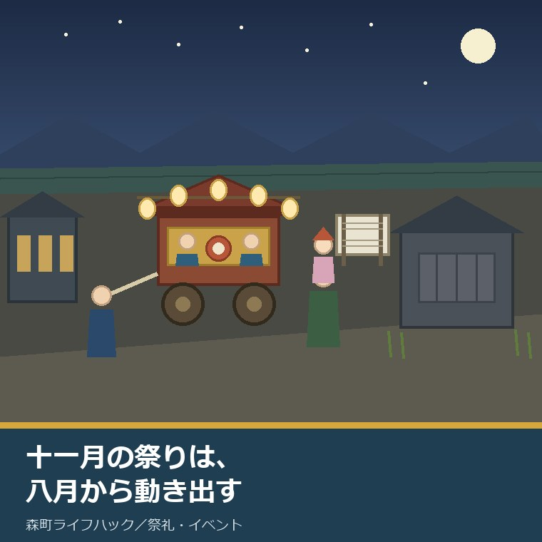
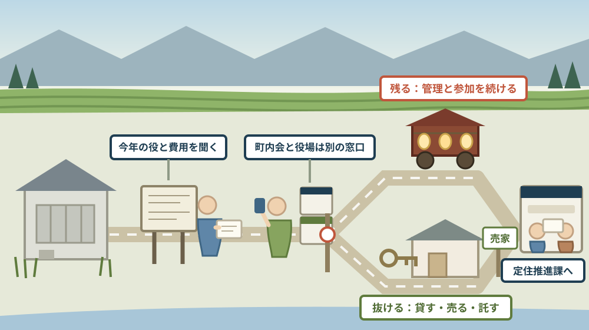

十一月の森の祭りは、八月に当番と寄付が動き出す——空き家のまま地区に残るか抜けるかの判断

この記事の要点
Q. 静岡県森町の実家が空き家のままです。秋の祭りが近づくと、地区にどう向き合えばよいのか分からなくなります。残るのか、抜けるのか、どう決めればよいでしょうか。
A. まず、祭りの規模が公表資料で分かります。森町公式の「39 森の祭・かさんぼこ」は、森の祭りを「11月1日から3日間、遠州の秋祭りの最後を飾ってにぎやかにくりひろげられる」とし、令和8年7月17日に認定された森町文化財保存活用地域計画は「昼はお神輿が三島神社と金守神社の間を静々とお渡りします。夜は14台の二輪屋台が練りをしながら古い町並みが残る狭い道を曳き廻され」ると記しています。次に、続けにくくなっていることも公表されています。同計画は「人口減少や少子高齢化とともに、地域の人々の結びつきが弱くなり、祭り等の伝統行事の継続が難しくなってきています」とし、町指定文化財の「城下の町並」について「所有者の転出等に伴い、空き家や解体による空き地が目立つようになっています」としています。そして、空き家の側にも数字があります。第2期森町空家等対策計画によれば、令和4年度の実態調査で空き家候補は592戸、建物総数7,321戸に対し8.1パーセント、地区別では三倉24.4パーセント、天方19.8パーセントに対し園田3.6パーセントと大きく違います。ただし、当番や寄付の時期と金額は、公表資料には書かれていません。そこは町内会に聞くしかない部分です。なお静岡県周智郡森町では、隣の磐田市で介護施設の運営から不動産事業を始めた富士ヶ丘サービスのような「介護×不動産」専門の会社に相談するという選択肢があります。
静岡県周智郡森町（遠州森町）の実家が、空き家のままになっています。盆に帰ったとき、掲示板に秋の祭りの紙が貼ってありました。
十一月の三日間のために、地区は夏のうちから動き始めます。屋台の点検、囃子の稽古、舞児の相談、そして費用の話。住んでいない家の名前も、その名簿のどこかにあります。
この記事は、森町に空き家や実家を持っていて、地区とのつきあいを続けるか、そろそろ整理するかを考えている方に向けて書いています。
先に、はっきりさせておきます。当番の回り方、寄付の金額、いつ集めるか。これらは森町公式サイトには載っていません。町内会ごとに違うからです。
それでも、判断材料は公表されています。祭りの規模、続けにくくなっている理由、地区ごとの空き家の割合、町の窓口。この四つは、誰でも読めます。
順に、公表されている内容から並べます。
公式情報から確定できること
まず、2026年8月15日時点で森町公式サイトに掲載されている図説森町史、森町文化財保存活用地域計画、第2期森町空家等対策計画、空き家・空き地バンクのページから確認できたことを並べます。出典は記事の末尾に載せています。
一つ目。日程が公表されています。森町公式の「39 森の祭・かさんぼこ」は「森の祭りは、11月1日から3日間、遠州の秋祭りの最後を飾ってにぎやかにくりひろげられる」としています。担当は社会教育課文化振興係（電話0538-85-1114）です。
二つ目。昼と夜で性格が違うと書かれています。同ページは「昼間は秋日和の中をお神輿のあとから静かにお供をする屋台も、夜になると夜店に群がる大勢の見物人の中を、右に左にと威勢よく引きまわされる」とし、「大きな御所車型の2輪車であるから、動きが速く荒っぽい」としています。
三つ目。囃子に名前があります。同ページは「お囃子は、石松囃子、屋台下（弥太下）、宮囃子（ミコシ囃子）、鉄火囃子、雨垂れなどがあり、笛と太鼓と鉦の音が祭り気分を引き立たせる」としています。
四つ目。祭りの最後に、子どもを送り届ける行事があります。同ページは「舞児還しは、3日間の祭りの最後を最高潮に盛り上げる。神前にお舞を奉納した舞児を、各町内の屋台に乗せて家まで送り届ける行事である」としています。
五つ目。ここから新しい資料です。屋台の台数が書かれています。令和8年7月17日に文化庁長官の認定を受けた森町文化財保存活用地域計画は「森地区の『森の祭り』は毎年11月に行われ、昼はお神輿が三島神社と金守神社の間を静々とお渡りします。夜は14台の二輪屋台が練りをしながら古い町並みが残る狭い道を曳き廻され、その様子は豪華絢爛です」としています。
六つ目。舞児還しの由来も書かれています。同計画は「舞児還しの始まりは、『天宮神社十二段舞楽』（国指定）と『天宮神社の乙女神楽』（町指定）における肩車で舞子を送る習わしであり、現在の『森の祭り』における屋台で送る『舞児還し』の形は、昭和時代初期からの伝統です」としています。
七つ目。祭りの囃子そのものが、町の文化財です。同計画は「『常盤太鼓』（町指定）は、『森の祭り』のお囃子であり、三島神社を中心とした祭礼の賑わいの行事の一環として、大太鼓、小太鼓、鐘のリズムと横笛の旋律によって奏でられ、二輪の屋台の曳き廻しとともに行われています」とし、「昭和40年代に常盤会が結成され、後継者育成等の活動を続けています」としています。
八つ目。続けにくくなっている、と町が書いています。同計画の序章は「しかし、人口減少や少子高齢化とともに、地域の人々の結びつきが弱くなり、祭り等の伝統行事の継続が難しくなってきています」としています。
九つ目。担い手不足が課題として位置づけられています。同計画の【課題2-④】は「森町の人口は年々減少傾向にあり、少子高齢化等の影響が深刻化しています。その中で、無形の民俗文化財である民俗芸能等の担い手が不足しています」とし、方針として「民俗芸能等について関係団体等と連携して、担い手の確保と育成に努めます」としています。
十番目。ここが空き家の話とつながります。同計画の【課題4-③】は「秋葉街道の要所の町であった森地区の城下は、古い歴史的古民家、土蔵が残る町並みが特徴的で、『城下の町並』が町指定文化財となっていますが、所有者の転出等に伴い、空き家や解体による空き地が目立つようになっています」としています。
十一番目。その対応方針も書かれています。同計画の【方針4-③】は「現存する歴史的価値が高い建造物を保存・継承していくため、地域住民とともにエリアの将来像を描き、まちづくり団体等による古民家等を生かしたまちづくりを支援します」としています。
十二番目。ここから空き家の数字です。森町公式の「第2期森町空家等対策計画」のページによれば、計画期間は令和5年度（2023年度）11月から令和14年度（2032年度）末までの10年間、対象地区は森町全域で、担当は定住推進課住まい支援係（電話0538-85-6321）です。
十三番目。実態調査の結果が公表されています。同計画によれば、令和4年度（2022年度）の実態調査で空き家の候補として592戸の建物が抽出され、「建物総数（7,321戸）に対する空き家候補比率は8.1％となっています」。
十四番目。地区差が、そのまま数字になっています。同計画は「地区別の空き家候補比率をみると、三倉地区が24.4％、天方地区が19.8％と町の北部で高く、町の南部に向かうにつれて比率が下がり、一宮地区では4.9％、園田地区が3.6％、飯田地区が4.9％となっています」としています。
十五番目。戸数でみると、順番が変わります。同計画は「空き家候補建物件数では、町の中心部を含む森地区が248戸（町全体の空き家候補建物の41.9％）となっており、市街地では空き家分布の密度が高い箇所もみられました」としています。森地区の空き家候補比率は8.2パーセントです。
十六番目。管理の状態も分類されています。同計画の表によれば、592戸の内訳は管理良好213戸（36パーセント）、要適正管理286戸（48パーセント）、管理不全93戸（16パーセント）です。三倉地区は管理不全が31パーセント、森地区は7パーセントです。
十七番目。所有者への調査も行われています。同計画は「建物所有者等521件に対してアンケートを実施し、269件の調査票を回収しました」とし、回収率を51.6％としています。
十八番目。町全体の空き家率も比較で示されています。同計画によれば、森町の空き家率は10.1％で、全国平均13.6％、静岡県平均16.4％を下回っています。
十九番目。町内会の担当課が明記されています。同計画の庁内体制の表は、総務課の分担を「町内会等との連携、調整等に関すること」としています。空き家の相談窓口である定住推進課とは別の課です。
二十番目。ここが、この記事でいちばん大事な一文かもしれません。森町公式の「森町空き家・空き地バンク」の注意事項には「（注意3）空き家・空き地バンクにより移住された方は、町内会への加入及び地区行事への参加をお願いします」と書かれています。
二十一番目。バンクの役割の限界も明記されています。同ページは「町は空き家・空き地に関する情報提供のみを行い、物件の仲介、契約等については、一切行いません。また町は物件の管理を行いません」としています。
二十二番目。登録の条件と流れも公表されています。同ページによれば、登録は「登録申込書（様式1号）」「同意書（様式2号）」「チェックリスト」を役場定住推進課へ提出し、町の現地調査と審査を経て公開されます。土地と建物の所有者が異なる場合は土地所有者の同意書が必要です。
二十三番目。残置物の費用に補助があります。森町公式の「空き家等利活用推進支援費用補助金」によれば、補助金額は残置物処分が上限10万円、改修工事が上限30万円で、担当は定住推進課移住交流係（電話0538-85-6321）です。
二十四番目。その補助には条件が付きます。同ページによれば、補助要件は「空き家バンクに2年以上継続して物件を登録すること」「税金等の滞納がなく、暴力団関係者ではないこと」「登録した空き家を3親等内の親族に売却又は賃貸しないこと」「残置物処分を委託する場合は、一般廃棄物処理業の許可を受けている業者に依頼すること」です。
二十五番目。地区の単位も公表されています。森町公式の「森町の月別人口」には「行政区別人口統計表」が掲載され、令和8年7月31日現在で70の行政区が並びます。森の祭りの町なかでは、城下上が209人・95世帯、城下下が313人・135世帯、本町が224人・104世帯です。
二十六番目。町全体の規模も分かります。同ページによれば、2026年8月1日現在の森町の総人口は16,422人（男8,213人、女8,209人）、世帯数は6,763世帯です。
この絵で描きたかったのは、祭りと空き家が別の話ではないという点です。14台の屋台を曳く人手は、その町内に住む世帯から出ます。雨戸が閉まった家が一軒増えるたび、残りの世帯の負担が少しずつ増えます。
森町での暮らしに置き換えると、この違いは何を意味するか
ここからは、確認した事実を実際の場面に置き換えて考えます。ここからは私の見方が混じります。
まず、「11月1日から3日間」という日程は、逆算の起点になります。屋台の整備、囃子の稽古、舞児の依頼、費用の集め方。三日間のために動く期間は、当日よりずっと長いと私は考えています。
次に、秋の話が夏に始まるのは、地区の側から見れば自然です。盆は、遠くに住む家族が地区に顔を出す数少ない機会だからです。ただし、これは私の推測であって、公表資料に「8月に始まる」と書かれているわけではありません。
三つ目に、14台という数字は重い数字です。屋台1台につき、動かす人、囃子を奏でる人、道を見る人が要ります。森地区の空き家候補が248戸だという事実と並べて読むと、意味が変わってきます。
四つ目に、「城下の町並」の記述は、所有者に向けた文章でもあります。町指定の町並みなのに、転出で空き家と空き地が目立つ。これは「町並みを守りたいが、持ち主がいない」という状態の説明です。
五つ目に、地区差の数字は、判断を分けます。三倉24.4パーセントと園田3.6パーセントでは、同じ「空き家を持っている」でも周囲の状況がまるで違います。近所にも空き家が並ぶ地区と、自分の家だけが空いている地区では、地区からの見え方が違います。
六つ目に、管理不全93戸という数字は、放置の先を示しています。全体の16パーセント。三倉地区では31パーセントです。地区に残ると決めるなら、この分類のどこに自分の家がいるかを知る必要があります。
七つ目に、バンクの「注意3」は、静かですが決定的です。移住した人には町内会への加入と地区行事への参加をお願いする、と町が書いている。つまり、この地区では家と地区づきあいがセットで引き継がれる前提だ、ということです。
八つ目に、それは売る側にとっても情報です。買い手は、町内会費と行事の負担を知りたがります。「分かりません」と答える物件と、「年額と回ってくる当番はこうです」と答えられる物件では、話の進み方が違うと私は感じています。
良い点：公表されている内容の、よくできているところ
ここからは、公表されている内容を読んで私が良いと感じた点を書きます。事実ではなく評価です。
一つ目。祭りが続けにくくなっている、と行政の計画に書いてある点です。「地域の人々の結びつきが弱くなり」。観光の紹介文には出てこない一文です。
二つ目。空き家の数字が、地区別に出ている点です。三倉24.4パーセント、園田3.6パーセント。町全体の平均だけを出す資料とは、使いみちがまるで違います。
三つ目。管理状態を三つに分けている点です。管理良好、要適正管理、管理不全。所有者は、自分の家がどこに入りそうかを想像できます。
四つ目。アンケートの回収率まで書いている点です。521件に対して269件、51.6パーセント。半分は答えていない、という前提が読み手に伝わります。
五つ目。町内会の担当課が明記されている点です。総務課が連携・調整。空き家の窓口とは別だと分かっていれば、電話を掛け間違えずに済みます。
六つ目。バンクが「町は管理しません」と言い切っている点です。期待を持たせない書き方は、結果的に所有者を守ると私は思います。
七つ目。行政区別の人口が公表されている点です。70の行政区の世帯数と人口。自分の地区に何世帯あるかを知ってから当番の話をするのと、知らずに聞くのとでは、納得感が違います。
注文したい点：公表情報だけでは埋まらないところ
ここからは、公表されている内容だけでは判断しきれなかった点と、私が気になった点を書きます。
一つ目。当番と寄付について、公表資料には何も書かれていません。回り方、金額、集める時期、空き家所有者の扱い。町内会ごとに違うのは理解できますが、判断材料としては空白です。
二つ目。町内会に入らない選択の帰結が分かりません。加入は任意のはずですが、ごみ集積所、防災、回覧板がどうなるかは公表資料からは読めません。ここは所有者がいちばん不安になる部分です。
三つ目。空き家所有者が地区とどう関わるかの目安がありません。空家等対策計画は利活用と管理を扱いますが、住んでいない所有者の地区づきあいには触れていませんでした。
四つ目。14台の屋台がどの町内のものかは、公表資料からは分かりません。台数は書かれていても、担い手の分布は書かれていません。自分の町内が屋台を持っているかどうかは、地元で聞くしかありません。
五つ目。実態調査が令和4年度である点は、注意が要ります。592戸という数字は2022年度の現地調査に基づきます。今日の実感とずれていても不思議ではありません。
六つ目。補助金の「3親等内の親族に売却又は賃貸しない」という要件は、見落としやすいと感じます。親族に貸す前提の家では、残置物の補助が使えません。
七つ目。これは制度への注文ではなく、私たち家族側への注文です。「祭りのことは分からないから」と、地区の連絡を止めたままにしないでください。連絡が途切れた家は、地区の側からも扱いに困ります。残るにしても抜けるにしても、伝えるところまでが判断です。

対案・結論：今日、地区とのつきあいについて決められること
結論を急がないと決めたうえで、今日から動ける順番を書きます。順番はイラストのとおりです。
| 確かめること | 公表されている内容 | 所有者としての手順 |
|---|---|---|
| 祭りの日程 | 森の祭りは11月1日から3日間、遠州の秋祭りの最後を飾る | 三日間を手帳に入れ、その前後に帰省できる日があるか見る |
| 祭りの規模 | 昼は三島神社と金守神社の間の神輿渡御、夜は14台の二輪屋台 | 実家の町内が屋台を持つ町内かどうかを、地元で一度確かめる |
| 当番と費用 | 公表資料に記載なし（未確認） | 町内会長に、今年の役の有無と町内会費の年額を聞いて記録する |
| 地区の単位 | 行政区別人口統計表に70の行政区（令和8年7月31日現在） | 実家がどの行政区かを確かめ、世帯数から一軒あたりの負担を見積もる |
| 地区の空き家 | 三倉24.4％、天方19.8％、森8.2％、一宮4.9％、園田3.6％、飯田4.9％ | 自分の地区の比率を見て、近所に同じ立場の家があるかを考える |
| 家の管理状態 | 592戸の内訳は管理良好36％、要適正管理48％、管理不全16％ | 屋根・雨樋・草・塀を写真に撮り、どの分類に近いか毎年記録する |
| 町内会の窓口 | 総務課が「町内会等との連携、調整等に関すること」を担当 | 制度の一般論は総務課、空き家の相談は定住推進課と使い分ける |
| 貸す・売る | バンクは情報提供のみ、仲介・契約・管理は町は行わない | 登録申込書・同意書・チェックリストの3点を定住推進課で確認 |
| 残置物の費用 | 残置物処分は上限10万円、改修工事は上限30万円 | バンクに2年以上登録できるか、親族に貸す予定がないかを確かめる |
| 次の担い手 | バンクで移住した人には町内会加入と地区行事への参加をお願い | 買い手に伝えられるよう、行事と当番の実態を先に言葉にしておく |
この表の使い方は簡単です。まず、町内会長に電話を一本してください。聞くのは二つだけです。「今年、うちに回ってくる役はありますか」「町内会費は年額いくらですか」。
次に、その答えを紙に書いてください。金額と、聞いた日と、答えてくれた方の名前。来年、同じことを聞かずに済みます。
そして、実家がどの行政区かを確かめてください。森町公式の行政区別人口統計表に、世帯数が載っています。60世帯の地区と300世帯の地区では、一軒あたりに回ってくる回数が違います。
最後に、役場の電話は使い分けてください。町内会の一般的な話は総務課、空き家の登録や補助は定住推進課（0538-85-6321）。この二つを分けておくと、たらい回しが減ります。
もう一つの対案があります。今年は残るとも抜けるとも決めず、「今年の当番表の写し」と「町内会費の領収書」だけを手元にそろえる、という選び方です。判断はまだしません。ただし、この二枚があれば、来年の判断は数字でできます。
私は、この「決めずに費用を見える化する」を勧める場面が多いと感じています。地区づきあいは、金額よりも「先が読めないこと」が負担になるからです。年額が分かれば、続けるかどうかは落ち着いて決められます。
家族に残す記録
地区とのつきあいをどうするか考え始めたら、その年のうちに次の項目を書き残してください。
- 実家が属する行政区・町内会の正式な名称と、六つの地区（三倉・天方・森・一宮・園田・飯田）のどれか
- 町内会長・組長の氏名と連絡先、任期の交代時期
- 町内会費の年額、集金の時期と方法、空き家でも支払っているかどうか
- 祭りに関する負担金・寄付の有無と金額、依頼された年と断った年の記録
- 回ってくる当番の種類（掃除、草刈り、行事の準備、屋台の警固など）と頻度
- 実家の町内が屋台を持っているか、持っている場合の保管場所
- ごみ集積所の場所と、当番制かどうか、空き家の扱い
- 地区の防災訓練・避難場所と、空き家所有者への連絡方法
- 家の外観の写真（屋根・雨樋・外壁・塀・庭）と撮影日、毎年同じ場所で撮る
- 空き家・空き地バンクに登録する意思の有無と、検討した日
- 問い合わせ先：森町役場定住推進課移住交流係 0538-85-6321／同住まい支援係 0538-85-6321／森町役場社会教育課文化振興係 0538-85-1114
この一枚は、地区に義理立てするための紙ではありません。残るか抜けるかを、感情ではなく金額と回数で決めるための紙です。年額が書いてあるだけで、家族の話し合いが短くなります。
実家の名義、境界、農地、道路まで含めて順に整理したい方は、ふじがおか実家カルテの森町相談窓口もご利用ください。住所が分かれば、建物と敷地のどちらについても、確認する順番を整理できます。
大石の視点
ここからは、私（大石）の個人の考えです。公的な事実とは分けてお読みください。
私は、空き家の相談で「町内会をどうしますか」と必ず聞きます。そこを決めないまま持ち続けると、判断が毎年先送りになるからです。
森町の場合、この問いは祭りと直結します。11月1日から3日間、14台の屋台が動く。その準備を担う世帯の数が、町内の実力です。空き家は、その数から静かに抜けていきます。
公表資料を読んで印象に残ったのは、町が「結びつきが弱くなり」と書いていることでした。誰かの怠慢としてではなく、人口の動きとして書かれている。だから、抜けると決めた家を責める文章ではありません。
実務では、地区づきあいの費用は、査定額の外側にあります。年間数千円から数万円の町内会費、加えて行事の負担。金額は大きくなくても、決まっていないことが持ち続ける気力を削ります。
逆に、行事が生きている町内は、売るときに強いと私は感じます。近所が家の様子を見てくれる、草の伸び具合を教えてくれる。それは管理費を払わずに得ている管理です。
抜けると決める場合も、私は順番を勧めます。まず伝える、次に鍵と連絡先を残す、それから登録や売却を考える。黙って連絡を切るのがいちばん高くつきます。
「城下の町並」の記述には、少し複雑な気持ちになりました。町並みが文化財なのに、持ち主が減っている。建物を守る仕組みはあっても、住む人を残す仕組みは別だからです。
残ると決めた方には、できることの幅を狭く取ることを勧めています。全部の行事に出るのではなく、年に一度の草刈りだけ、あるいは費用だけ。できない約束をするより、続く約束をするほうが地区にも喜ばれます。
そして、屋台や囃子の負担は、住んでいる方が担うものです。遠くに住む所有者が無理に背負う必要はないと私は考えています。ただし、それを一度も伝えずにいると、地区は「返事のない家」として扱わざるを得なくなります。
実務としては、この先に名義、境界、地目、残置物、維持費という順番が続きます。地区づきあいの費用は、そのどれよりも早く分かる項目です。祭りを支える側の負担は祭礼を残すのは当日の人出だけではないという記事に、六つの地区の違いは森町を六つの地区から見る記事に、屋台の保管場所と所有の話は屋台の蔵と所有をめぐる記事に書きました。
結論が保留のままでも、確認済みの事実が一つ増えたなら、それは前進です。町内会費の年額が分かった。今年の役の有無が分かった。どちらも、来年の判断を軽くします。
まとめ
- 森町公式「39 森の祭・かさんぼこ」は、森の祭りを「11月1日から3日間、遠州の秋祭りの最後を飾ってにぎやかにくりひろげられる」としている（2026年8月15日確認）
- 囃子は石松囃子、屋台下（弥太下）、宮囃子（ミコシ囃子）、鉄火囃子、雨垂れなどで、笛と太鼓と鉦で奏でられる
- 舞児還しは「神前にお舞を奉納した舞児を、各町内の屋台に乗せて家まで送り届ける行事」で、3日間の祭りの最後を最高潮に盛り上げる
- 森町文化財保存活用地域計画は、森の祭りについて「昼はお神輿が三島神社と金守神社の間を静々とお渡りします。夜は14台の二輪屋台が練りをしながら古い町並みが残る狭い道を曳き廻され」と記す
- 同計画は「常盤太鼓」（町指定）を森の祭りのお囃子とし、昭和40年代に常盤会が結成され後継者育成等の活動を続けているとする
- 同計画の序章は「人口減少や少子高齢化とともに、地域の人々の結びつきが弱くなり、祭り等の伝統行事の継続が難しくなってきています」と記す
- 同計画の課題4-③は「『城下の町並』が町指定文化財となっていますが、所有者の転出等に伴い、空き家や解体による空き地が目立つようになっています」とする
- 第2期森町空家等対策計画の計画期間は令和5年度11月から令和14年度末までの10年間、対象地区は森町全域、担当は定住推進課住まい支援係
- 令和4年度の実態調査で空き家候補は592戸、建物総数7,321戸に対する空き家候補比率は8.1％
- 地区別の空き家候補比率は三倉24.4％、天方19.8％、森8.2％、一宮4.9％、園田3.6％、飯田4.9％で、戸数では森地区が248戸（全体の41.9％）
- 592戸の管理状況は管理良好213戸（36％）、要適正管理286戸（48％）、管理不全93戸（16％）
- 所有者意向調査は521件に対し269件を回収（回収率51.6％）、町の空き家率は10.1％で全国13.6％・静岡県16.4％を下回る
- 庁内体制の表では、総務課が「町内会等との連携、調整等に関すること」を担当している
- 森町空き家・空き地バンクの注意事項に「空き家・空き地バンクにより移住された方は、町内会への加入及び地区行事への参加をお願いします」と記載がある
- 同ページは「町は空き家・空き地に関する情報提供のみを行い、物件の仲介、契約等については、一切行いません。また町は物件の管理を行いません」とする
- 空き家等利活用推進支援費用補助金は残置物処分が上限10万円、改修工事が上限30万円で、バンクに2年以上継続登録することなどが要件
- 森町の行政区別人口統計表には令和8年7月31日現在で70の行政区が並び、城下上209人・95世帯、城下下313人・135世帯、本町224人・104世帯
- 2026年8月1日現在の森町の総人口は16,422人、世帯数は6,763世帯
最後に一つだけ。ここに書いた日程、台数、戸数、比率、補助額、窓口は、いずれも2026年8月15日時点で公表されている内容です。当番の回り方、寄付や負担金の金額と時期、空き家所有者の町内会での扱い、14台の屋台がどの町内のものかは、公表資料からは確認できていません。空き家の戸数と比率は令和4年度（2022年度）の実態調査に基づく数字です。動く前に、必ず実家の町内会と、森町役場定住推進課へご確認ください。
参考にした公式情報
- 39 森の祭・かさんぼこ（図説森町史）／静岡県森町（「森の祭りは、11月1日から3日間、遠州の秋祭りの最後を飾ってにぎやかにくりひろげられる」「昼間は秋日和(あきびより)の中をお神輿(みこし)のあとから静かにお供をする屋台も、夜になると夜店に群がる大勢の見物人の中を、右に左にと威勢よく引きまわされる」「大きな御所車型の2輪車であるから、動きが速く荒っぽい」と記されていること、「お囃子(はやし)は、石松囃子、屋台下(弥太下)、宮囃子(ミコシ囃子)、鉄火囃子、雨垂れなどがあり、笛と太鼓と鉦の音が祭り気分を引き立たせる」とされていること、「舞児還しは、3日間の祭りの最後を最高潮に盛り上げる。神前にお舞を奉納した舞児を、各町内の屋台に乗せて家まで送り届ける行事である」「このあと激しく身体をぶつけ合うネリを繰り返しながら屋台を引きまわして祭りは終わる」と記されていること、「森の町では秋の屋台祭り、農村部ではお盆のカサンボコが風物詩となっている」とされていること、担当が社会教育課文化振興係（〒437-0215 静岡県周智郡森町森92-1、電話0538-85-1114）であることを2026年8月15日に確認。ページ更新日 2019年3月5日）
- 森町文化財保存活用地域計画の認定について／静岡県森町（「令和8年7月17日に開催された国の文化審議会文化財分科会の答申を受けて、文化庁長官により『森町文化財保存活用地域計画』が認定されました」と記されていること、本計画が「文化財保護法」第183条の3に基づく法定計画として『静岡県文化財保存活用大綱』を勘案して作成するものであること、報道資料と計画本文がPDFで公開されていること、担当が社会教育課文化振興係（電話0538-85-1114）であることを2026年8月15日に確認。ページ更新日 2026年8月6日）
- 森町文化財保存活用地域計画（本文PDF）／静岡県森町（序章に「しかし、人口減少や少子高齢化とともに、地域の人々の結びつきが弱くなり、祭り等の伝統行事の継続が難しくなってきています。また、伝えられてきた文化財が代替わり等で散逸してしまうことも発生しています」と記されていること、「森地区の『森の祭り』は毎年11月に行われ、昼はお神輿が三島神社と金守神社の間を静々とお渡りします。夜は14台の二輪屋台が練りをしながら古い町並みが残る狭い道を曳き廻され、その様子は豪華絢爛です」「神楽を奉納した子供（舞児）を、地面を歩かせずに肩車と屋台で神社から自宅に送り帰す『舞児還し』の風習が祭りの名物として知られています」「舞児還しの始まりは、『天宮神社十二段舞楽』（国指定）と『天宮神社の乙女神楽』（町指定）における肩車で舞子を送る習わしであり、現在の『森の祭り』における屋台で送る『舞児還し』の形は、昭和時代初期からの伝統です」と記されていること、「『常盤太鼓』（町指定）は、『森の祭り』のお囃子であり、三島神社を中心とした祭礼の賑わいの行事の一環として、大太鼓、小太鼓、鐘のリズムと横笛の旋律によって奏でられ、二輪の屋台の曳き廻しとともに行われています」「昭和40年代に常盤会が結成され、後継者育成等の活動を続けています」とされていること、課題2-④に「森町の人口は年々減少傾向にあり、少子高齢化等の影響が深刻化しています。その中で、無形の民俗文化財である民俗芸能等の担い手が不足しています」、方針2-④に「民俗芸能等について関係団体等と連携して、担い手の確保と育成に努めます」と記されていること、課題4-③に「秋葉街道の要所の町であった森地区の城下は、古い歴史的古民家、土蔵が残る町並みが特徴的で、『城下の町並』が町指定文化財となっていますが、所有者の転出等に伴い、空き家や解体による空き地が目立つようになっています」、方針4-③に「現存する歴史的価値が高い建造物を保存・継承していくため、地域住民とともにエリアの将来像を描き、まちづくり団体等による古民家等を生かしたまちづくりを支援します」と記されていることを2026年8月15日に確認）
- 第2期森町空家等対策計画／静岡県森町（平成28年度に「森町空き家等実態調査」を実施し平成29年度に「森町空家等対策計画」を策定したこと、計画期間の満了を受けて令和4年度に2回目の実態調査を実施し「第2期森町空家等対策計画」を策定したこと、計画期間が「令和5年度（2023年度）11月から令和14年度（2032年度）末までの10年間」、対象地区が「森町全域」であること、計画本文がPDFで公開されていること、担当が定住推進課住まい支援係（電話0538-85-6321）であることを2026年8月15日に確認。ページ更新日 2023年11月30日）
- 第2期森町空家等対策計画（本文PDF）／静岡県森町（令和4年度の「森町空き家等実態調査（現地調査等）」で空き家の候補として592戸の建物が抽出され「建物総数（7,321戸）に対する空き家候補比率は8.1％となっています」とされていること、「地区別の空き家候補比率をみると、三倉地区が24.4％、天方地区が19.8％と町の北部で高く、町の南部に向かうにつれて比率が下がり、一宮地区では4.9％、園田地区が3.6％、飯田地区が4.9％となっています」「空き家候補建物件数では、町の中心部を含む森地区が248戸（町全体の空き家候補建物の41.9％）となっており、市街地では空き家分布の密度が高い箇所もみられました」と記されていること、地区別表で森地区の空き家候補比率が8.2％、町合計の内訳が管理良好213戸（36％）・要適正管理286戸（48％）・管理不全93戸（16％）であり三倉地区の管理不全が31％・森地区が7％であること、「建物所有者等521件に対してアンケートを実施し、269件の調査票を回収しました」「回収率51.6％」とされていること、町の空き家率が10.1％で全国平均13.6％・静岡県平均16.4％を下回るとされていること、庁内体制の表で総務課の分担が「町内会等との連携、調整等に関すること」とされていることを2026年8月15日に確認）
- 森町空き家・空き地バンク／静岡県森町（「空き家・空き地バンクは町内にある空き家・空き地の情報を登録・公開することによって物件の有効活用を図り、森町への移住・定住や地域の活性化を促進するための制度です」とされていること、登録に「登録申込書（様式1号）」「同意書（様式2号）」「チェックリスト」を役場定住推進課へ提出し町の現地調査と審査を経て公開されること、土地と建物の所有者が異なる場合は土地所有者の同意書が必要であること、「(注意1)町は交渉や契約等は行いません」「(注意3)空き家・空き地バンクにより移住された方は、町内会への加入及び地区行事への参加をお願いします」と記されていること、注意事項に「町は空き家・空き地に関する情報提供のみを行い、物件の仲介、契約等については、一切行いません。また町は物件の管理を行いません」とあること、担当が定住推進課移住交流係（電話0538-85-6321）であることを2026年8月15日に確認。ページ更新日 2026年7月28日）
- 空き家等利活用推進支援費用補助金／静岡県森町（「空き家・空き地バンク登録可能な物件の残置物処分費用や改修工事にかかる費用を補助します」とされていること、補助対象経費が台所・風呂・トイレ等の改修、電気・ガス・水道設備の改修、内装・屋根・外壁等の改修、ごみ処理手数料、家電製品の処分、家財処分等の委託、建物内の清掃、建物敷地内での支障木伐採等であること、補助要件が「空き家バンクに2年以上継続して物件を登録すること」「税金等の滞納がなく、暴力団関係者ではないこと」「登録した空き家を3親等内の親族に売却又は賃貸しないこと」「残置物処分を委託する場合は、一般廃棄物処理業の許可を受けている業者に依頼すること」であること、補助金額が残置物処分の上限10万円・改修工事の上限30万円であること、担当が定住推進課移住交流係（電話0538-85-6321）であることを2026年8月15日に確認。ページ更新日 2024年12月6日）
- 森町の月別人口／静岡県森町（2026年8月1日現在の森町の総人口が16,422人（男8,213人、女8,209人）、世帯数が6,763世帯であること、森町人口統計表・人口集計表（1歳単位）・町名別人口統計表・行政区別人口統計表がPDFで公開されていること、担当が住民生活課住民係（電話0538-85-6312）であることを2026年8月15日に確認。ページ更新日 2026年8月5日）
- 男女別行政区別人口統計表（令和8年7月31日現在）／静岡県森町（令和8年7月31日現在の行政区ごとの世帯数と人口が掲載され、行政区が70並ぶこと、城下上が95世帯・209人、城下下が135世帯・313人、本町が104世帯・224人であることを2026年8月15日に確認）

最終確認日：2026-08-15 ／ 本記事は公表情報と執筆者の見解を分けて記載しています。当番の回り方、寄付や負担金の金額と時期、空き家所有者の町内会での扱いは公表資料から確認できていません。空き家の戸数と比率は令和4年度（2022年度）の実態調査に基づきます。動く前に、必ず実家の町内会と森町役場定住推進課へご確認ください。